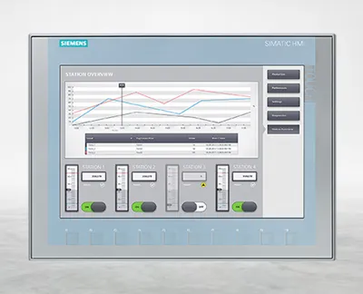

ACS logView — Smart Data Logger
Keep digital records of required parameters with trend views for easy troubleshooting. Digitalize manual entry, collect real-time data, and connect with any PLC/SCADA/Controller. 50 tags inclusive in the basic package.